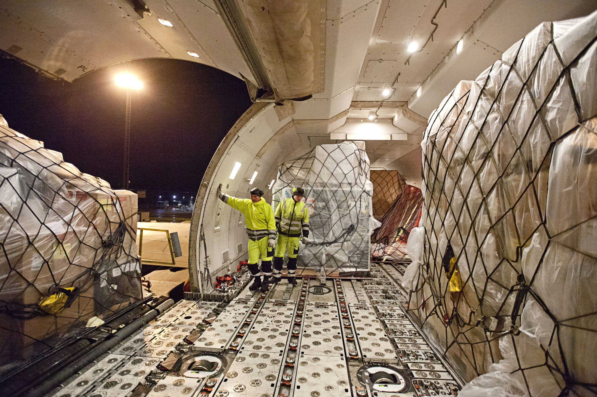

Khái niệm · So sánh · Case study Bình Dương – Hà Nội
Môn: Nhập môn Logistics
GVHD: Th.S Nguyễn Minh Thông
Lớp: LO22301_LOG101 · Nhóm: 06
Hai lựa chọn. Bạn đoán chênh nhau bao nhiêu?
Một xe đầu kéo chạy thẳng hơn 1.700 km, qua 20+ tỉnh thành.
Kết hợp ba chặng, chuyển tải tại hai điểm nút, một đơn vị điều phối.
Chi phí chênh bao nhiêu phần trăm? Giữ câu trả lời của bạn!
Multimodal Transport — theo Công ước Geneva 1980 & Nghị định 87/2009/NĐ-CP
Cùng dùng nhiều phương tiện, nhưng bản chất pháp lý hoàn toàn khác
Người kinh doanh vận tải đa phương thức
Linh hoạt nhất — Xương sống của chặng gom và giao hàng
Đặc điểm chính: Tới tận cửa kho (Door-to-Door), tần suất cao, không phụ thuộc vào lịch trình cố định của nhà ga hay bến cảng.
Phạm vi tối ưu: Phù hợp nhất cho chặng đầu (First-mile) và chặng cuối (Last-mile) dưới 300 km.
Ổn định & Tải trọng lớn — Lựa chọn hàng đầu cho hành lang Bắc - Nam
Đặc điểm chính: Khối lượng chở lớn, lịch trình cực kỳ chuẩn xác, ít chịu ảnh hưởng bởi thời tiết hay tắc đường.
Phạm vi tối ưu: Tuyến nội địa đường dài (> 500 km), vận chuyển container siêu trọng với chi phí tối ưu.
Chi phí thấp nhất — Xương sống của thương mại quốc tế
Đặc điểm chính: Tải trọng khổng lồ, giá cước trên mỗi tấn-km rẻ nhất trong tất cả các phương thức.
Phạm vi tối ưu: Vận chuyển hàng hóa quốc tế xuyên đại dương hoặc vận tải ven biển Bắc - Nam chặng dài.

Tốc độ vượt trội — Giải pháp cho hàng hóa giá trị cao & khẩn cấp
Đặc điểm chính: Thời gian transit nhanh nhất, độ an toàn và độ tin cậy cao nhất.
Phạm vi tối ưu: Linh kiện điện tử, dược phẩm, hàng hóa dễ hỏng hoặc đơn hàng cần giao gấp.
Chuyên biệt & Liên tục — Tối ưu cho hàng hóa dạng lỏng, khí
Đặc điểm chính: Vận hành 24/7 không nghỉ, không phụ thuộc thời tiết, chi phí vận hành chặng dài rất thấp.
Phạm vi tối ưu: Dầu mỏ, khí đốt, hóa chất lỏng chuyên dụng.
Không có phương thức nào tốt nhất — chỉ có phương thức phù hợp nhất với từng chặng
| Tiêu chí | Đường bộ | Đường sắt | Đường biển | Đường không |
|---|---|---|---|---|
| Chi phí / tấn-km | Trung bình cao | Thấp | Rất thấp | Rất cao |
| Tốc độ | Trung bình | Trung bình | Chậm | Rất nhanh |
| Khối lượng chở | Nhỏ – trung bình | Lớn | Rất lớn | Nhỏ |
| Độ linh hoạt tuyến | Cao nhất | Thấp (theo ray) | Thấp (theo cảng) | Thấp (theo sân bay) |
| Phát thải CO₂ | Cao | Thấp | Rất thấp | Rất cao |
| Vai trò điển hình | Chặng đầu/cuối | Chặng giữa nội địa | Chặng giữa dài | Hàng khẩn cấp |
Nguyên tắc: đường bộ gom hàng ở hai đầu, phương thức khối lượng lớn gánh chặng giữa
Xe tải hoặc trailer đặt lên toa xe lửa. Giảm tải quốc lộ, tiết kiệm nhiên liệu chặng dài.
Container từ kho ra cảng, đi tàu, rồi tiếp tục bằng xe tải. Mô hình phổ biến nhất ở Việt Nam.
Trucking nội địa nối sân bay. Dùng cho điện tử, dược phẩm, hàng mẫu, thương mại điện tử xuyên biên.
Dùng đường sắt xuyên lục địa thay cho việc đi vòng qua kênh đào. Rút ngắn đáng kể thời gian.
📍 Điểm xuất phát: KCN VSIP 1 (Bình Dương)
📍 Điểm tập kết: Ga Sóng Thần / Cảng Cát Lái (TP.HCM)
🚚 Phương tiện: Xe đầu kéo Container (First-mile trucking)
📏 Quãng đường: ~12 km - 35 km
Mục đích: Gom hàng linh hoạt từ cửa kho nhà sản xuất ra điểm nút giao thông chính để xếp dỡ lên tàu.
📍 Điểm đi: Ga Sóng Thần (Đường sắt) / Cảng Cát Lái (Đường biển)
📍 Điểm đến: Ga Yên Viên (Hà Nội) / Cảng Hải Phòng
🛤️ Phương tiện: Tàu hỏa Bắc - Nam / Tàu container ven biển
📏 Quãng đường & Thời gian: ~1.720 km · 1 ngày 10 giờ
Mục đích: Vận chuyển khối lượng lớn xuyên Việt, cắt giảm tối đa chi phí nhiên liệu và phát thải CO₂.
📍 Điểm dỡ hàng: Ga Yên Viên / Cảng Hải Phòng
📍 Điểm giao cuối: Tổng kho Đông Anh (Hà Nội)
🚚 Phương tiện: Xe tải trung / Xe đầu kéo chặng ngắn
📏 Quãng đường: ~15 km - 100 km
Mục đích: Last-mile delivery đưa container giao tận cửa kho cho khách hàng.
Chủ hàng chỉ booking một lần — phần còn lại do MTO điều phối
Điểm chuyển tải luôn là nơi rủi ro tập trung cao nhất
Kết luận: Đa phương thức thắng rõ rệt về chi phí, môi trường và tính pháp lý. Đường bộ toàn tuyến chỉ thắng khi thời gian là ưu tiên sống còn.
Thử thách ghi nhớ kiến thức về Vận tải đa phương thức
Chúng tôi sẵn sàng giải đáp câu hỏi về MTO và vận tải đa phương thức.